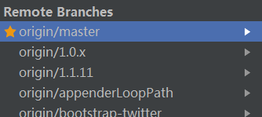
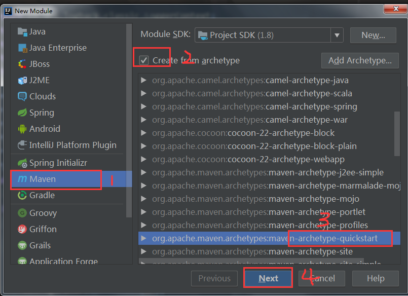
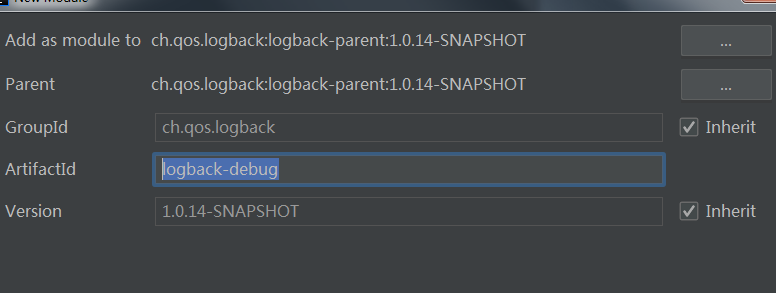
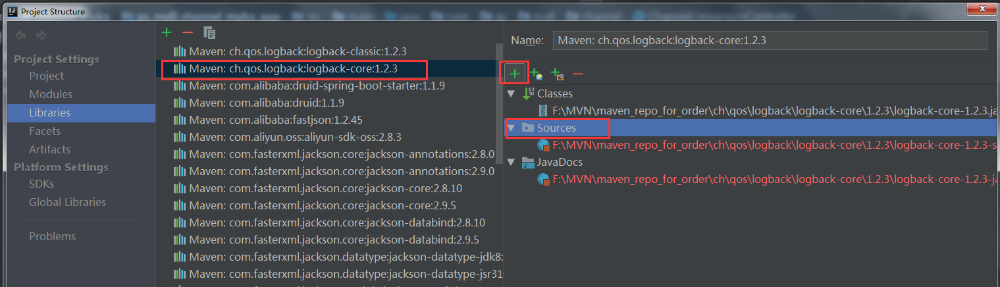
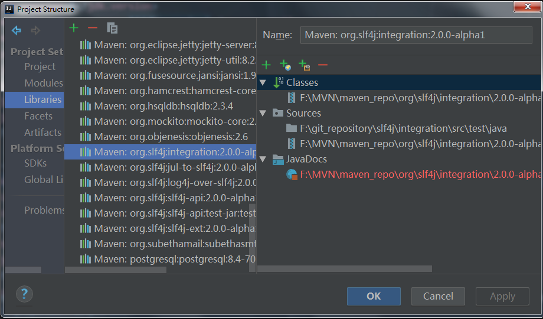

#阅读环境搭建
logback 源码克隆
跟着上一篇的步骤，首先先去fork一下logback的源码，然后克隆到本地，我用了 IDEA 作为编辑工具；
logback有很多分支，我选择的了master，版本信息还是"1.3.0-alpha5-SNAPSHOT"（选啥都行）
注意： logback是用maven管理项目的，当maven同步完成的时候，最好是编译一下代码免得出现问题

搞定了源码，我们就开始创建debug用的项目了，可以新建一个全新的项目，也可以在当前的源码项目中创建一个调试用的模块（这种最方便，而且是自己的仓库，可以无法无天的搞）我们新建一个模块：

名字自己的起一个就好了

然后呢？既然我们的项目时用来调试logback用的，当然需要引入logback的依赖：
1 | <!-- <version>1.0.14-SNAPSHOT</version> 这个版本号要和自己下载的源码保持一致，这样会自动关联当前项目的源码--> |
由于引入依赖时，maven会做两种操作：
- 引入当前项目的其他模块，跳转源码，就是本地的源码；
- 引入其他项目 ，那么下载相关的jar包，此时我们跳转源码，实际上是看的编译后的.class文件，并不是源码；
而在maven管理中右击就是可以去下载源码的，一旦下载了源码，跳转源码就会跳转到.java文件中；
但是！这个是下载的网上的源码，不是我们本地的仓库源码，所以千万不要使用这个。

如何关联源码呢？可以到project structure中设置libraries，添加本地源码的地址，就可以了

（我是就在logback源码项目创建的模块，所以这里不需要引入源码的步骤）
slf4j 源码克隆
slf4j的源码
为什么要克隆slf4j的源码呢？因为logback重度依赖slf4j；
我们之后阅读的源码很多都会是slf4j的，所以这里要提前克隆号slf4j的代码；
注意：
由于slf4j和logback是两个项目，而我们创建的调试模块在logback里面，引入源码，步骤和上面的一致，这里就不赘述了，只展示一下引入后的结果
最后:注意slf4j源码的版本要切换的和logback依赖的一致，我选的版本依赖的是“2.0.0-alpha1”，所以要找slf4j源码版本为“2.0.0-alpha1”的分支（有可能没有单独版本分支，我是到git提交日志里面找到的版本…）

下一篇：logback源码阅读-跟着文档开始